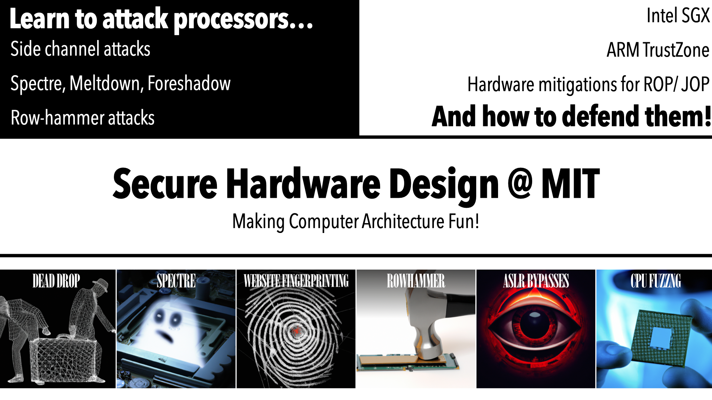

Secure Hardware Design
MIT’s Secure Hardware Design Class (6.5950/6.5951) is an open-source course that teaches students both how to attack modern CPUs and design architectures resilient to those attacks. Students gain hands-on experience hacking real processors and are taught various state-of-the-art hardware attacks and defenses.
This course is the culmination of multiple years of work. Browse our story here.

Meet the Team
Secure Hardware Design is the culmination of years of effort by a team of students. Say “hello” to the people behind it!
Think, Play, Do.
Our course philosophy involves three pillars- Think, Play, Do.‚Äç
Think
In Lecture, we encourage students to think critically about hardware security as a part of greater systems. Our lectures are designed to guide critical thinking and engagement with the research literature.
| Topic | Lecture Materials |
|---|---|
| Microarchitectural Attacks
      | |
| Physical security
    | |
| Hardware support for software security
  | |
| Tools for security assurance |
The üî® icon means this lecture features an in-class demo.
Please send requests for powerpoint files to Mengjia.
Play
In Recitation, we encourage students to play with the course materials through interactive hands-on games. Our recitations consist of interactive learning sessions, leveraging the Capture-the-Flag (CTF) format for friendly competitions amongst students. Students team up and work with their peers to conquer various challenges together.‚Äç
| Topic | Content | Format |
|---|---|---|
| C/C++ Recitation | A brief refresher on C/ C++ syntax and useful features. | CTF |
| Cache Attack Recitation | A visual overview of prime+probe on a custom RISC-V CPU. | Group Learning |
| Physical Attacks Recitation | Students work together to implement a timing side channel against real microcontrollers. | CTF |
| RISC-V System Programming Recitation | Overview of the privileged ISA specification for RISC-V with emphasis on exception handling and interrupt conditions. | CTF |
| Formal Verification Recitation | Students learn the basics of formal verification techniques. | Group Learning |
Do
In Labs, students have a chance to actually put the concepts from class to work. The attack labs involve implementing attacks taught in class on real hardware. No simulators, no trickery, no nonsense. Real implementations on real hardware.‚Äç
“How can I use your materials in my class?”
Every year, we update our course to reflect the ever-changing landscape of research in the hardware security world. All of these labs are open-source and free to use. Just shoot us an email at hw-sec-lab-dev at mit dot edu before doing so, so we can give you the instructor’s solutions and starter gradebook. If you do use our materials in your class, make sure to attribute us on your class webpage.
| Lab | Difficulty | Setup | |
|---|---|---|---|
| Cache Side Channels | Hard | x86_64 Linux server. Some tuning required. We use Cascade Lake. | |
| Spectre | Medium | x86_64 Linux server. | |
| Website Fingerprinting | Easy | Any modern web browser (Chrome, Firefox, Safari). | |
| Rowhammer | Hard | x86_64 Linux server. Some tuning to match your hardware required. | |
| ASLR Bypasses | Easy | x86_64 Linux server. | |
| CPU Fuzzing | Medium | x86_64 Linux server. | |
Cache Side Channels (Dead Drop)
Students start with building primitives to measure cache access latencies and examine microarchitecture details. Next, they will implement Prime+Probe on a modern cache hierarchy, requiring a thorough understanding of cache geometry. Finally, they implement a covert channel chat client, demonstrating mastery over creating contention on set associative structures.
Spectre
Students implement a Flush+Reload attack against shared memory between userspace and kernelspace. Then, they extend their attack to work under speculation in increasingly difficult exploitation scenarios to leak kernel memory back to userspace.
Website Fingerprinting
We start with teaching students to implement a cache occupancy attack using Javascript to profile different websites. Next, the students are guided to use machine learning to distinguish these websites based on their traces collected using JavaScripts. Finally, we ask the students to slightly change the attack and think about the root causes of the attack.
Rowhammer
Students learn the essential steps towards implementing Rowhammer in the wild. We guide the students to go through the two level address translation: virtual address -> physical address -> DRAM location. The students are first given the physical address of vulnerable rows and hammer rows and they will quickly see bit flips in the wild. Then the students are asked to reverse engineering some missing pieces of DRAM banking functions to search for unknown vulnerable rows.
ASLR Bypasses
Students defeat ASLR using a variety of attacks including using both OS and microarchitectural side channels. Then, they implement a code reuse attack (ROP) using the leaked ASLR slide.
CPU Fuzzing
This is our capstone open-ended design project. Students are tasked with discovering bugs in a real CPU RTL design by implementing system software and creating a custom instruction fuzzer. They are free to implement this fuzzer however they’d like, so long as it can capture processor exceptions and discover backdoors automatically.